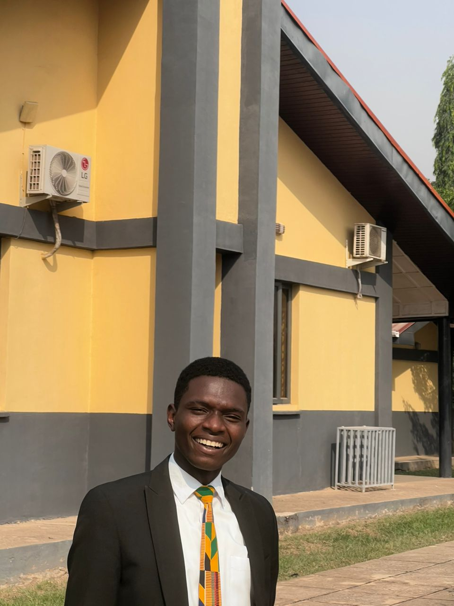

Founder
Mr Shadrack Erhiaganoma Ekavana
Mr. Shadrack Erhiaganoma Ekavana is a multifaceted professional skilled in graphic design, project management, and web programming. With a passion for creativity and technology, he adeptly combines artistic vision with technical proficiency to deliver comprehensive solutions for clients and projects. His ability to navigate the intersections of design, management, and development makes him a valuable asset in dynamic environments, particularly in the realms of digital marketing and online presence.
Mission Statement
To enhance and bring beauty to the world through graphic design and web programming,
enhance with an unmatched will of creativivity.
Our Team
Mr. Kenneth Mustapha Gunde
Kenneth Gunde Mustapah is a skilled virtual assistant and data analyst specializing in supporting art galleries and companies within the creative sector. His dual role combines administrative proficiency with analytical insight, contributing to the operational efficiency and data-driven decision-making of the organization.

Mr. Emmanuel Ezendu Jachimike
Mr.Emmanuel Ezendu Jachimike is a dedicated finance specialist and bookkeeper known for his pivotal role in supporting the growth and financial stability of Perr’sArt and Gallery Company. With a passion for numbers and a commitment to mentorship, he contributes not only to the company's financial management but also to the professional development of emerging finance professionals and artists within the gallery.
Mrs. Joy Ene John
Mrs. Joy Ene John, known as Luna Jay,is a talented graphic designer and fashion designer whose creative vision and technical expertise significantly contribute to the growth and identity of Perry'sArt and Gallery Fashion House. With a deep appreciation for the interplay between visual arts and fashion, she plays a crucial role in crafting compelling designs that resonate with the gallery's artistic mission and elevate its brand presence in the fashion industry.
Our History
Founded in 2022, By Mr.Shadrack Erhiaganoma Ekavana, and He's Outstanding Team. Perry’s Art and Gallery has built a rich history marked by community engagement, artistic collaboration, and dedication to promoting the arts. By continually adapting to changing cultural landscapes and embracing new opportunities, the gallery remains a vital institution in the art world.Perry's Art Gallery aims to Work with the ideaolgy of the unimaginarey work of Art and ehnacement of the graphic and merrific catalyste for better and clarific art designs, and training up the new generation for a better tomorrow..